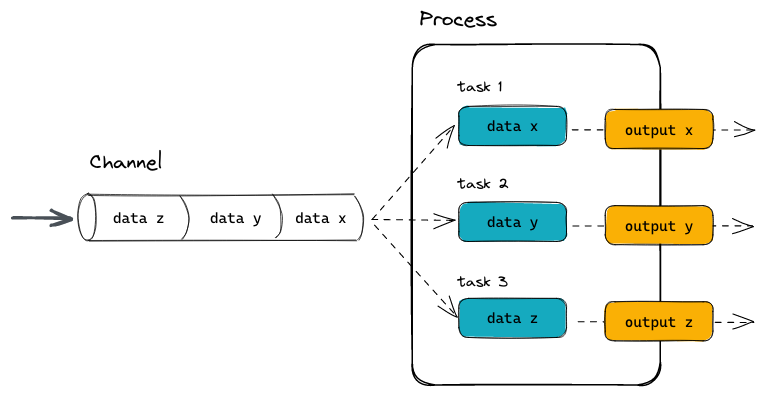

Nextflow is a workflow management system that simplifies running complex data analyses across different environments including laptops, HPC clusters and the cloud.
Built on the dataflow programming model, it allows tasks to execute in parallel and ensures reproducibility and scalability.
Nextflow uses a dataflow programming model, where process execution is triggered by the availability of input data.
Each process runs independently, enabling implicit parallelism and deterministic workflow behavior.
Defenitions
In Nextflow, workflows are built from two core components: processes and channels.
Processes define individual computational tasks, each has its own script, input, and output. They are isolated and can run in parallel.
Channels are the data connectors between processes.
They define how data moves through the workflow, enabling dynamic and asynchronous execution.

Chanel can be created using channel factories and modified during execution of the workdlow using operators
Workflow
Typical *.nf file looks like this:
#!/usr/bin/env nextflow
// Parameters & Settings
params.reads = "data/*.fastq"
params.ref = "data/genome.fa"
params.outdir = "results"
// Imports & Libraries
include { QC } from './modules/qc.nf'
include { ALIGN } from './modules/align.nf'
include { REPORT } from './modules/report.nf'
// Custom Functions
def sample_id(path) {
return path.baseName.replace('.fastq', '')
}
// Processes
process PROCESS_NAME{
// directives
container
publishDir "${params.outdir}/qc", mode: 'copy'
input:
val x
path y
tuple z
output:
tuple val x, path f
script:
// can be a script from bin folder
fastqc ...
}
...
workflow {
// Channel creation
Channel
.fromPath(params.reads)
.map { file -> tuple(sample_id(file), file) }
.set { reads_ch }
// workflow itself
qc_results = QC(reads_ch)
bam_files = ALIGN(qc_results)
...
}In order to run the script we need to have a specific version of the Nextflow pre-installed into enviroment. Following CLI interface can be used for running the pipeline:
nextflow run <pipeline> [options] \
[--params-file <file>] \
[--<param> <value>] \
[-profile <profile>] \
[-resume] \
[-with-docker|-with-singularity]After execution nextflow create a lot of files in the work directory. These files can be reused using -resume option in case of repetitive executions. After some time work directory can be cleaned in a way:
nextflow clean <pipeline> [options] [--work-dir <dir>] [-f]Read more about CLI nextflow commands here
Comparison with other pipeline managers
One can choose between various workflow managers:
| Feature | Nextflow | Snakemake | CWL (Common Workflow Language) |
|---|---|---|---|
| Language | Groovy | Python | YAML/JSON spec |
| Parallelism | Dataflow (tasks run when input ready) | Explicit dependencies in rules | DAG (tasks run according to DAG) |
| Reproducibility | Excellent: containers & caching | Very good: conda & containers | High: strict spec & container support |
| Where it runs | Local, HPC, cloud, Kubernetes | Local, HPC (cloud possible) | HPC & cloud via execution engines |
| Containers | Docker, Singularity, Podman | Docker, Singularity | Docker, Singularity |
| Ease of use | Moderate (Groovy DSL learning curve) | Easy if you know Python | Steeper, verbose YAML |
| Portability | Very high | Medium | High |
| Community | Big | Medium | ??? |